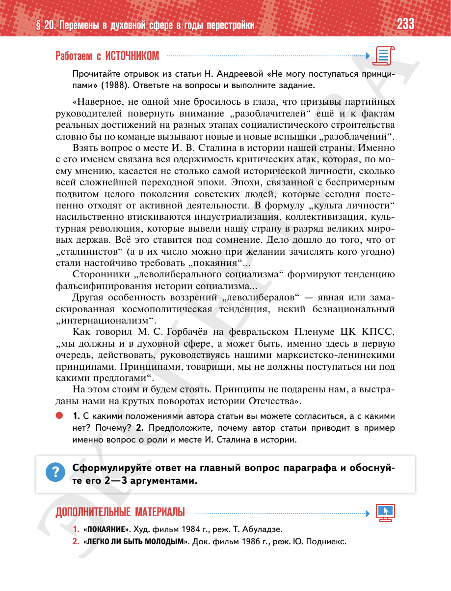

⌂
Мединский.нет
Последнее обновление: 16.08.2026 18:31
Мединский.нет
›
История России. 11 класс. Базовый уровень
›
Глава I. СССР в 1945—1991 гг.
›
§ 21. Реформа политической системы СССР и её итоги
›
стр. 234

← стр. 233
Оглавление
стр. 235 →
×